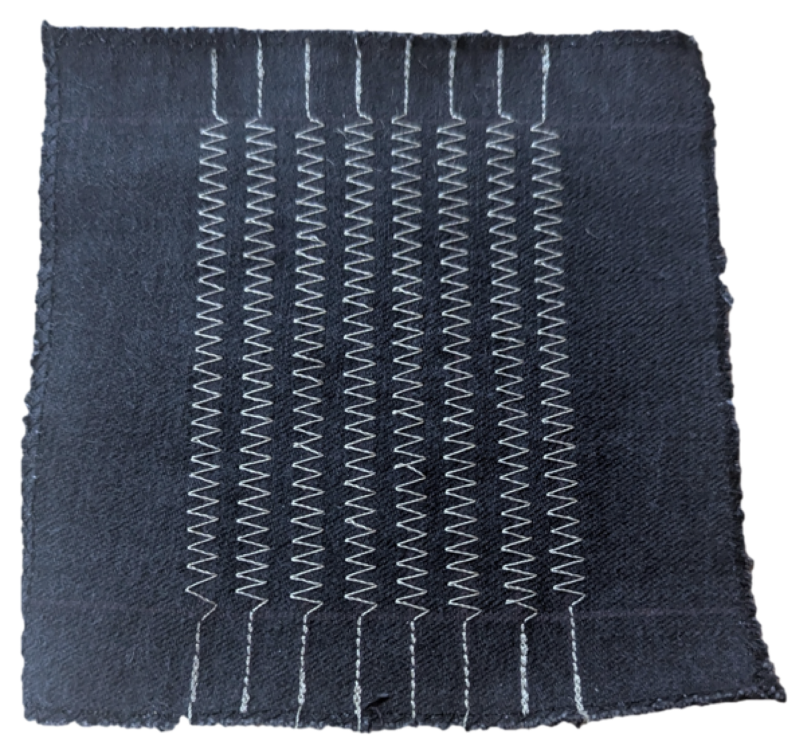
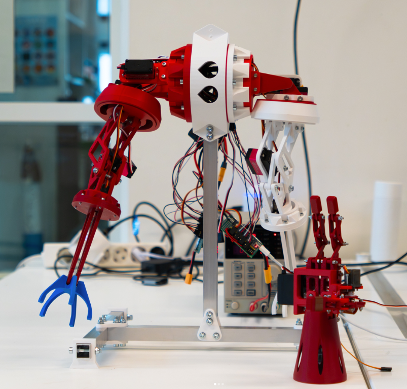

Robotic skin development
A layered textile contact sensor, followed by a separate humanoid-skin investigation.
- Period
- BSc: 09/2024 – 03/2025; Echo: 09/2026 – present
- Context
- Product Engineering II, TH Köln; Project Echo, TU Delft
- Status
- BSc feasibility study completed; Echo investigation ongoing
- My contribution
- Joint BSc development with Fabio Jain; Skin Team Lead at Echo
In collaboration with: Fabio Jain ↗
64 sensing locations and two active pressure levels, demonstrated in a flexible BSc contact-matrix prototype.

Context and my role
Fabio Jain and I developed a tactile-sensor feasibility prototype for Product Engineering II at TH Köln. We wanted to detect contact position and distinguish lighter from stronger contact using materials and fabrication available in a university workshop. The completed BSc study and my later Project Echo role are separate projects.
A contact matrix with two triggering thresholds
Perpendicular conductive tracks form an 8 × 8 matrix. At rest, perforated elastic separators hold the sender and receiver tracks apart. A press compresses a separator until tracks touch through its openings. An Arduino activates each sender track in turn and reads the receivers; the connected pair identifies a sensing location.
One sender layer, two receiver layers and two separators provide two active pressure levels plus no contact. These are discrete contact thresholds. The prototype does not continuously measure force.

Sewn conductors and perforated foam
We sewed Madeira HC-12 conductive thread onto denim in zigzag tracks, avoiding specialised conductive printing and plating. Denim could be sewn and resisted tearing. Laser-perforated EVA foam supplied the elastic separation; its thickness and fill density set the triggering threshold.
The tracks were 5 mm wide with 8 mm centre-to-centre spacing. Shift registers reduced the microcontroller connections needed to address and read the matrix.

Results and limitations
The prototype detected contact locations across 64 sensing cells, with several cells responding under a larger contact area. In five threshold tests per configuration, averaged using a rounded 16 mm test cube, increasing separator fill density and thickness from 2 to 3 mm raised the activation pressure. It remained functional when wrapped around a 100 mm-diameter cylinder, with no measurable change reported in that test.
The 8 mm value is track pitch, rather than a validated localisation error. Precise triggering accuracy was not established. The stack was more than 1 cm thick, wiring became burdensome at larger scales, and material deformation produced reported measurement errors up to 10%. Maximum bending, long-term durability and whole-body coverage remained untested.
Sensor construction and evaluation
SN74HC595 output registers activate one sender track at a time; SN74HC165 input registers serialise receiver states. Pull-down resistors and output-protection diodes support the readout. Serial scanning limits scaling, and no measured frame rate or general ghost-free multi-touch result was established.
The paper reports prototype material costs below €10. This excludes an installed-system price or labour estimate. Its investigated activation-pressure range was approximately 10–100 Pa, with threshold measurements rounded because of measurement uncertainty. A third active pressure level was reserved in the communication protocol for future extension.
Project Echo: a separate investigation
09/2026 – present · TU Delft · Ongoing investigation
I am Skin Team Lead for RSA Project Echo ↗. Our stated goals are scalable touch localisation, approximate force sensing and a protective soft outer layer for a humanoid, with the wider project aiming towards RoboCup Rescue 2028. These are investigation goals; the BSc measurements above do not establish Echo performance.
